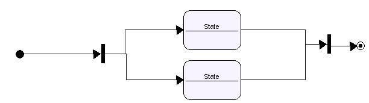
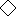

Diagramme
d'états

Le diagramme d'état décit le cycle de vie
d'un object les conditions permettant à l'objet de passer d'un
état
à un autre.
Les concepts suivants peuvent être
utilisés
pour construire un diagramme d'états dans Open ModelSphere:
- État

- Acteur humain

- Système
(acteur
non-humain)
- Transition

- Pseudo-états:
- Initial
- Final

- Décision

- Synchronisation

Ajouter
un acteur
- Sélectionnez l'acteur dans la barre d'outils édition .
- Avec l'outils acteur,
cliquez à l'intérieur de a fenêtre du diagramme.
Ajouter
un État
- Sélectionnez l'outil État
dans la barre d'outils édition .
- Avec l'outils État,
cliquez à l'intérieur de a fenêtre du diagramme.
Notez que les États et
Pseudo
États ont les mêmes caractéristiques et peuvent
être créés de la même façon.
.
Ajouter un objet (acteur non-humain)
- Selectionnez l'outil creation d'objets
dans la barre d'outils édition.
- Avec l'outil creation d'objets
sélectionné
à l'intérieur de a fenêtre du
diagramme.
Ajouter une Transition
- Selectionnez l'outil creation de Transitions (
or
 )
dans la barre d'outils
édition.
)
dans la barre d'outils
édition.
- Choississez une des Transitions à partir de la
barre d'outils édition.
- Avec l'outil
creation de Transitions
sélectionné , cliquez
près du milieu du État source, puis, au milieu du État cible.
Ajouter un
stéréotype UML à un objet
- Selectionnez un objet à partir de la fenêtre
du diagramme ou
de la fenêtre explorateur.
- À partir du panneau
de conception, choisir Stéréotype
dans la liste.
Assigner
une contrainte UML à un objet
- À partir de la fenêtre du diagramme ou de la
fenêtre explorateur cliquez-droit
sur l'object cliquez sur l'outil propriétés

- Sélectionnez l'onglet contrainte UML, cliquez le bouton Lien.
Selectionnez une contrainte UML à
partir de la fenêtre.
Les concepts communs tel que
les liens sémantiques
et
les notes graphiques peuvent aussi
être
utilisés pour enrichir vos diagrammes d'états.